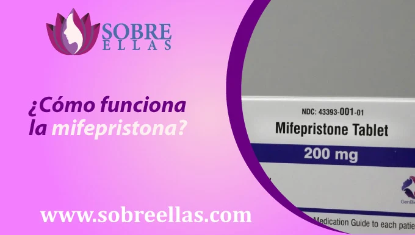
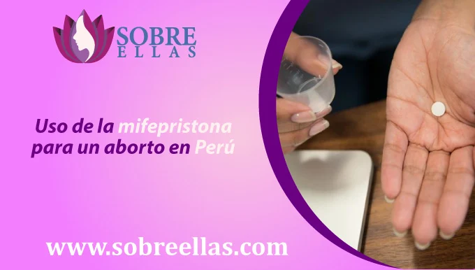
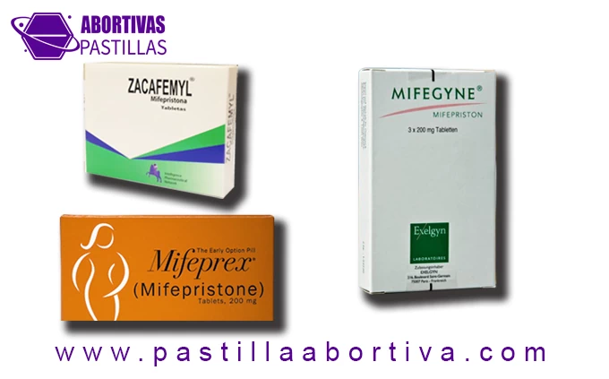

Lugares donde venden la Mifepristona y sus diferentes marcas
-
addContenido¿Para qué sirve la Mifepristona? ¿Cómo funciona la mifepristona? Uso de la mifepristona para un aborto en Perú ¿Que se necesita para tomar mifepristona? ¿Que hacer luego de un aborto? Las marcas comerciales zacafemyl, mifeprex y mifegyne son el mismo medicamento “Mifepristona” Extrema precauciones para abortar en casa con pastillas abortivas ¿Se puede abortar solo con Mifepristona? Mifepristona sitios donde la venden
Para hacer un aborto con pastillas Mifepristona y saber cuáles son los medicamentos originales Aquí te explicaremos si existe una diferencia entre el zacafemyl, mifeprex y mifegyne que son las marcas que llegan a Perú. Te diremos para qué sirven y dónde las venden.
Todos los medicamentos tienen una sustancia activa, la que proporciona el efecto por el cual lo consumimos. Sin embargo, existen muchas farmacias que pueden vender el mismo medicamento y tratarán de ponerle un nombre para diferenciarse. Éste es el caso del medicamento del que vamos a hablar.
La organización mundial de la salud (oms), recomienda que para inducir un aborto con medicamentos se utilicen de dos fármacos, la mifepristona y el misoprostol, debido a su seguridad. Ambos pueden ser vendidos con distintos nombres.
¿Para qué sirve la Mifepristona?
Una de las hormonas de gran importancia durante el embarazo es la progesterona. Ésta es producida por los ovarios, dentro de sus funciones están el que prepara al útero para la implantación, promueve la circulación sanguínea del tejido placentario para que el embrión se alimente y sobreviva, así como evita las contracciones uterinas hasta el momento del parto.
¿Cómo funciona la mifepristona?
La mifepristona, pastilla abortiva es utilizada para interrumpir un embarazo. También es conocida como "píldora abortiva", ya que funciona al evitar que el embarazo se desarrolle aún más, de tal forma se pone fin a un embarazo no deseado. Diversos estudios han comprobado que este medicamento puede llegar a tener una efectividad del 85 % siempre y cuando se utilice antes de las 12 semanas de embarazo, después de ese tiempo su efectividad comienza a disminuir. Puede tomarse por vía oral, sublingual y vaginal. El medicamento generalmente se toma en tres dosis de 3 pastillas, dejando una diferencia de horas entre una dosis y otra.
Uso de la mifepristona para un aborto en Perú
La pastilla mifepristona como medicamento abortivo, es utilizado en Perú por muchas mujeres que desean ponerle fin a su embarazo. Su nombre se debe a la combinación de dos fármacos, misoprostol y progesterona. cumpliendo su rol de bloquear cualquier acción de la hormona progesterona, que es responsable del desarrollo del bebé en el útero, permitiendo que el aborto ocurra de forma más rapida que si se utilizara otro tipo de método de aborto.
¿Que se necesita para tomar mifepristona?
En primer lugar, se debe contar con la asesoría de un médico que tenga experiencia en el uso de este tipo de medicamentos. En segundo lugar, según la receta médica que éste indique, se procederá a hacer la toma de las pastillas abortivas mifepristona en un lugar previamente elegido por el paciente en cuestión. En tercer lugar, deberá tomar mifepristona y esperar que haga efecto en nuestro organismo, induciendo al aborto. En cuarto lugar, debe tomar progesterona después de que haya ocurrido el aborto. Esto ayudará a curar cualquier lesión que pueda haber ocurrido durante el aborto. Tener en cuenta que la mifepristona es conocida por ser un medicamento muy seguro y tener muy pocos efectos secundarios. Sin embargo, siempre debe hablar con su médico si tiene alguna pregunta sobre el medicamento o el proceso de aborto.
¿Que hacer luego de un aborto?
Si recientemente has atravesado un aborto inducido y no estas segura de como actuar o que hacer en los proximmos dias, te dejamos algunos cquonsejor que puedes seguir para tener una recuperación sin problemas:
- 1. Comunícate con el médico que llevó todo tu proceso abortivo, él te ayudará a despejar cualquier duda que tengas con respecto a la recuperación, en caso tengas algún síntoma extraño o de que forma puedes estar segura que el aborto fue todo un exito.
- 2. Asegúrate de contar con todos los medicamentos que te ayudarán a tu recuperación, tener a alguien cerca por si necesitas algún favor durante tu estado de reposo.
- 3. Descansa mucho. Es importante descansar lo suficiente después de un aborto para garantizar una recuperación sin problemas.
- 4. Tomate el tiempo adecuado para una recuperación completa, pasado los días recomendados por el médico si aún consideras que deseas esperar un poco más, para retomar tus actividades consultado con tu médico. Es importante tomarse el tiempo para curarse de un aborto. La curación puede llevar tiempo, así que sea paciente y permítase procesar lo que ha sucedido.
- 5. Busque apoyo. Si necesita apoyo durante su recuperación, hay muchos recursos disponibles para usted.
Las marcas comerciales zacafemyl, mifeprex y mifegyne son el mismo medicamento “Mifepristona”
Sí, todos son medicamentos que tienen como sustancia activa la mifepristona, pero están producidos por distintas farmacéuticas. A continuación, te las mencionamos:
- zacafemyl, mifepristona producida por zhejiang xianju pharmaceutical y distribuido por intelligence pharmaceutical network consulting.
- mifeprex, mifepristona producida por danco laboratories.
- mifegyne, mifepristona producida por la farmacéutica exelgyn.
Extrema precauciones para abortar en casa con pastillas abortivas
La mifepristona es un compuesto que va a bloquear la acción de la progesterona. Al tomar mifepristona durante el embarazo, tendrá como consecuencia el degenerar el tejido pre placentario, relajar y dilatar el cérvix, así como hará al útero sea susceptible a las contracciones. Posteriormente se tendrá que administrar misoprostol, el cual generará fuertes contracciones para que el útero sea capaz de desechar todo el tejido.
La mifepristona no debe de usarse a la par de otros medicamentos como el ketoconazol, itraconazol, eritromicina y ácido acetil salicílico.
¿Se puede abortar solo con Mifepristona?
No se recomienda, ya que se necesitan múltiples tomas y tiene menor eficacia sola. El protocolo que ha dado mejores resultados es el de la combinación de medicamentos. La mifepristona se administra primero y pasadas 24-48 horas, se realiza la administración del misoprostol.
Ésta combinación hace que la mujer presente menos efectos indeseables, sea menos doloroso y haya menor probabilidad de aborto incompleto.
Mifepristona sitios donde la venden
- Lima
- Callao
- Arequipa
- Trujillo
- Chiclayo
- Piura
- Huancayo
- Cusco
- Chimbote
- Iquitos
- Pucallpa
- Tacna
- Ica
- Juliaca
- Ayacucho
- Sullana
- Cajamarca
- Huánuco
- Chincha Alta
- Huacho
- Tarapoto
- Paita
- Puno
- Huaraz
- Pisco
- Tumbes
- Talara
- Puerto Maldonado
- Huaral
- Abancay
- Jaén
- Moquegua
- Ilo
- Yurimaguas
- Cerro de Pasco
- Barranca
- Lambayeque
- Moyobamba